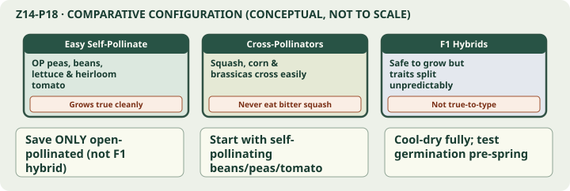

Z14-P18 · Food production and preservation · New manuscript
Understand open-pollinated vs hybrid seeds and dry seed-saving limits
Save viable true-to-type seeds from easy self-pollinating crops while avoiding cross-pollinated off-types and damp mold failure.
When it applies · Home gardeners preserving seeds of peas, beans, tomatoes, peppers, or lettuce for multi-year resilience.
Equipment · Seed packet lineage labels (OP/heirloom vs F1 hybrid), dry paper envelopes, airtight glass jar with silica/dry storage, and permanent date labels.

Actions
- Save seeds ONLY from healthy, disease-free open-pollinated (OP) or heirloom varieties—seeds collected from F1 hybrid plants remain safe to plant but will NOT grow true to the parent traits in the next generation.[P19]
- Start with easy self-pollinating crops (peas, bush/pole beans, lettuce, heirloom tomatoes) that rarely cross-pollinate, rather than wind- or insect-pollinated squash, corn, or brassicas that cross readily across gardens (never eat intensely bitter cross-pollinated squash, which can contain toxic cucurbitacins!).[P19, M15]
- Dry harvested seeds thoroughly at cool room temperature (never high oven heat) until brittle-dry, store labeled with crop/variety/year inside cool, dark, airtight jars, and run simple damp-paper-towel germination tests each late winter before relying on older seed stock.[P19, P18]
Failure recognition · Storing damp home-saved bean seeds in a sealed plastic bag on a warm kitchen shelf where mold destroys 100% germination by winter.[P19, P18]
Verify · Confirm open-pollinated parent lineage, thorough cool room-air drying, labeled airtight dark storage, and late-winter germination test.[P19]
Stop or change course · Discard moldy, insect-bored, or failed-germination seed lots and NEVER eat intensely bitter home-saved squash or gourds.[P19, M15]
Evidence and editorial notes
- M15 · National Capital Poison Center · First Aid for Poisonings (Current web edition)
- Section: First aid for swallowed, inhaled, skin and eye exposure; when to call 911 · Conditions: Suspected poisoning in the U.S.
Support: For collapse, seizure, breathing trouble or inability to wake call 911. Otherwise get timely poison-center advice. Do not induce vomiting.
Limitations: Substance and route determine immediate care. Keep rescuers away from contaminated scenes. · Conflicting evidence: See A02 claim audit for boundaries.
Editorial note: Separates 911 life-threat activation from Poison Control guidance. · Specialist reviewer: Medical toxicology and poison control
Primary source · checked 2026-11-25 - P18 · University of Minnesota Extension · Harvesting and Storing Home Garden Vegetables (current web edition)
- Section: Dry Grain, Legume, and Pantry Pest/Moisture Protection · Conditions: Cool dry household pantries storing dry beans, grains, flour, and dehydrated produce
Support: Store dry staples and dehydrated foods in cool (ideally 50–70°F), dark, dry locations inside airtight food-grade containers to prevent moisture absorption, rancidity, rodents, and pantry insects; inspect periodically for clumping, webbing, or off-odors.
Limitations: Heat, humidity, and light degrade nutrients and accelerate fat rancidity in whole grains and nuts far faster than refined staples. · Conflicting evidence: None; avoids fabricated 25-year shelf-life promises.
Editorial note: Grounds dry-goods storage, pest exclusion, and spoilage inspection. · Specialist reviewer: Food storage and Extension specialist
Primary source · checked 2026-11-24 - P19 · University of Minnesota Extension · Planting the Vegetable Garden (current web edition)
- Section: Season Extension, Cold Frames, Seed Saving Limits, and Succession Planting · Conditions: Northern short-season gardens seeking spring/fall harvest extension
Support: Use row covers, low tunnels, or ventilated cold frames to buffer light frosts and stagger fast-maturing crops (succession planting), noting that open-pollinated vs hybrid seeds behave differently if saved and require isolation/dry storage.
Limitations: Unvented plastic tunnels overheat rapidly on sunny spring days and cook tender seedlings within an hour. · Conflicting evidence: None; grounds realistic northern season extension without overpromising winter yields.
Editorial note: Supports northern resilience and seed-planning cards in Z14. · Specialist reviewer: Horticulture and Extension specialist
Primary source · checked 2026-11-24
Source lineage · UMN Extension Gardening; new manuscript · Classification · New manuscript.